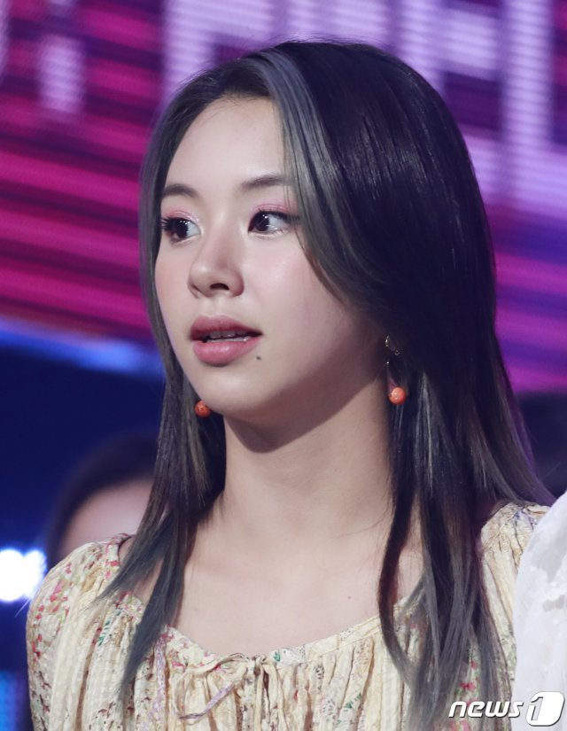
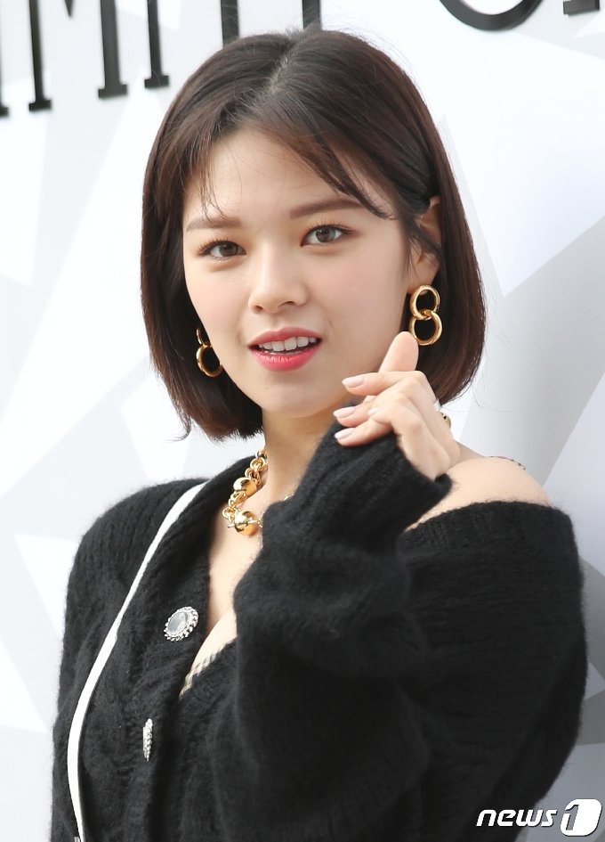
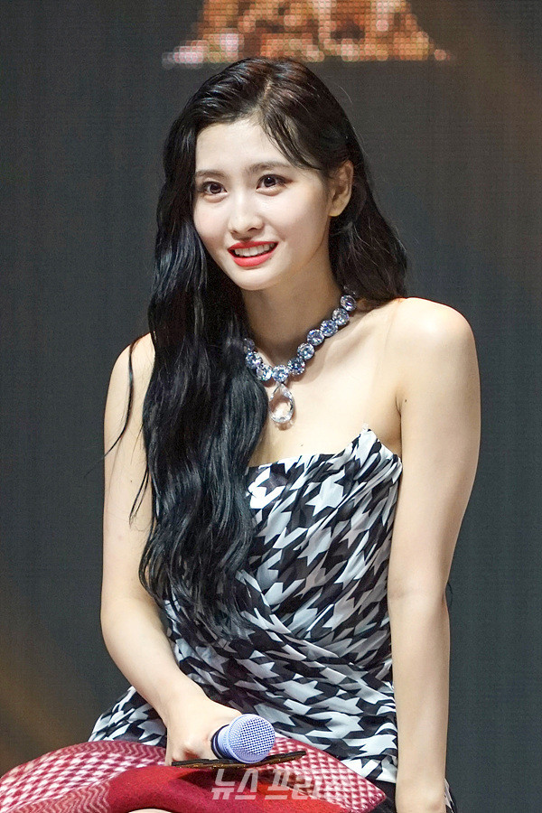
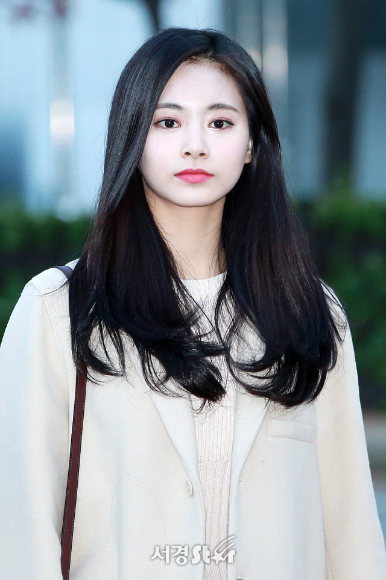

TWICE / Member
- 본명 : 박지효
- 생년월일 : 1997년 02월 01일(26세)
- 출생지 : 대한민국 경기도 구리시 수택동
- 학력 : 청담고등학교
- 포지션 : 리더

- 본명 : 손채영
- 생년월일 : 1999년 4월 23일(24세)
- 출생지 : 대한민국 서울특별시 강동구 둔촌동
- 학력 : 한림연예예술고등학교 실용음악과
- 포지션 : 메인래퍼
- 본명 : 김다현
- 생년월일 : 1998년 5월 28일(25세)
- 출생지 : 대한민국 경기도 성남시 중원구 은행동
- 학력 : 한림연예예술고등학교 실용음악과
- 포지션 : 서브보컬

- 본명 : 유정현
- 생년월일 : 1996년 11월 1일(26세)
- 출생지 : 대한민국 경기도 수원시 장안구 정자동
- 학력 : 압구정고등학교
- 포지션 : 리드보컬
- 본명 : 名井南(묘이 미나)
- 생년월일 : 1997년 03월 24일(26세)
- 출생지 : 일본 효고현 니시노미야시
- 학력 : 니시노미야현립코후고등학교
- 포지션 : 메인댄서

- 본명 : 平井もも(히라이 모모)
- 생년월일 : 1996년 11월 09일(26세)
- 출생지 : 일본 교토부 교타나베시
- 학력 : 일본 고등학교졸업정도인정시험(검정고시)
- 포지션 : 메인댄서
- 본명 : 임나연
- 생년월일 : 1995년 09월 22일(27세)
- 출생지 : 대한민국 서울특별시 강동구 명일동
- 학력 : 건국대학교 영상영화학
- 포지션 : 리드댄서
- 본명 : 湊﨑紗夏(미나토자키 사나)
- 생년월일 : 1996년 12월 29일(26세)
- 출생지 : 일본 오사카부 오사카시 덴노지구
- 학력 : 일본 고등학교졸업정도인정시험(검정고시)
- 포지션 : 서브보컬

- 본명 : 周子瑜(저우쯔위)
- 생년월일 : 1999년 6월 14일(24세)
- 출생지 : 대만 타이완성 타이난시
- 학력 : 한림연예예술고등학교
- 포지션 : 리드댄서